Parameters - Sort sequences
The report only lists the data according to the Debtor account name (Description).
You may create or add parameters to select the sequence (order) in which the debtor accounts are listed on a printed report.
Currently the new report only consists of a single file (e.g. Copy of Empty.rep) which is a report file.
|
|
Remember to make a copy of your report in case something goes wrong. |

To add the sequence (sort) parameter:
- On the "Report man" screen, select your report and click on the Parameters button. It will automatically create a *.dfm (Delphi form parameter screen file) (e.g. "Copy of Empty.dfm").
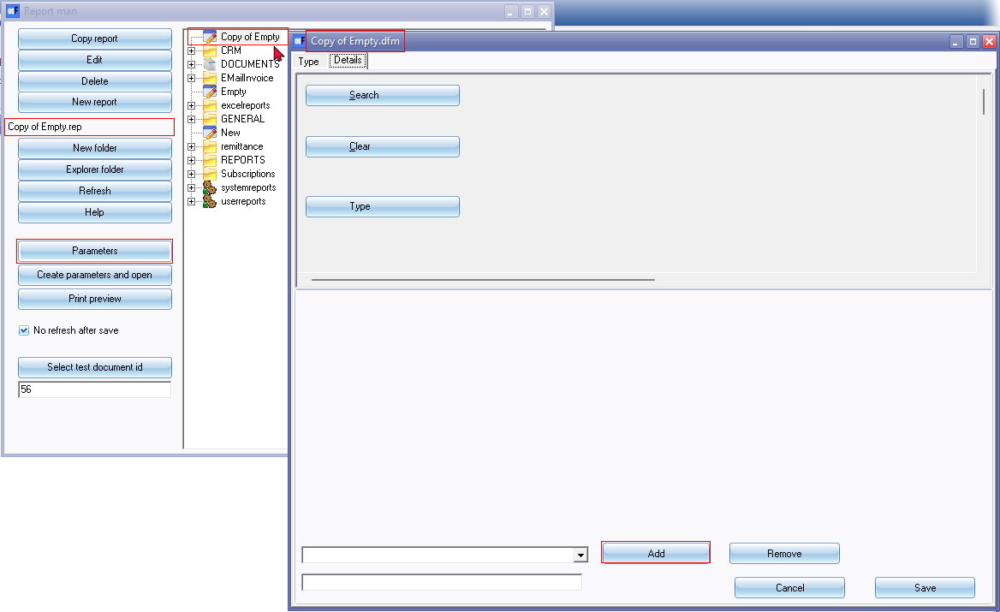
- On the parameters screen for your report, click on the Add button.
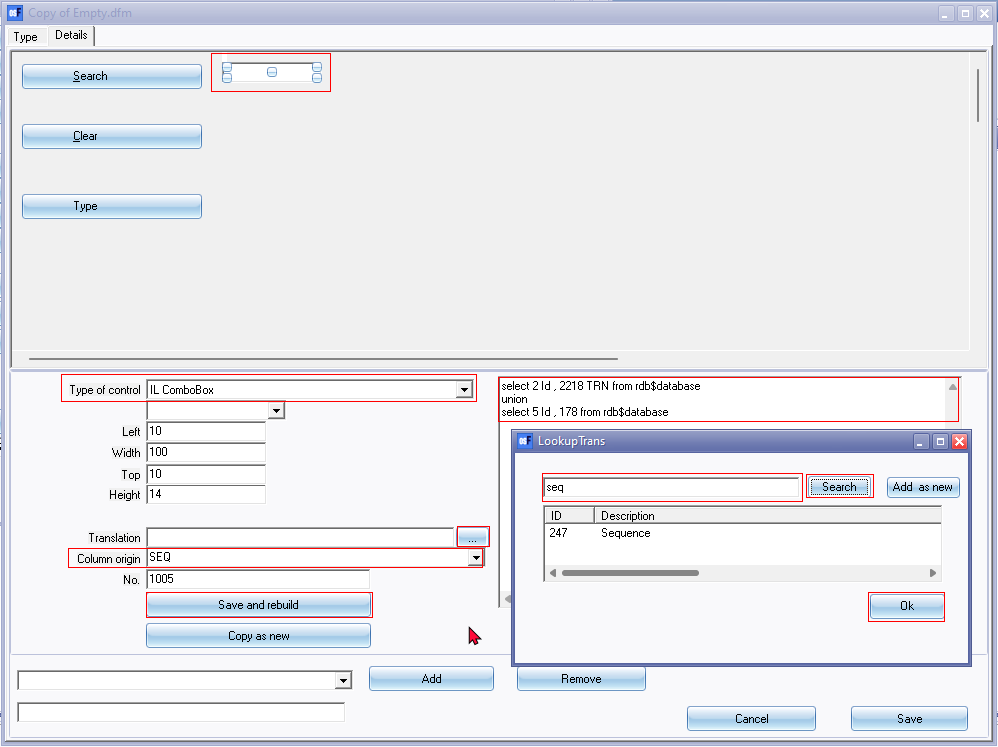
- Select the options as follows:
- Type of control - Select IL ComboBox.
- Size and position - Enter the values for the Left, Width, Top and Height properties to position your parameter.
- Translation - Click on the ... icon and search for the language label. Select your label (in this example, "Sequence" is selected) and click Ok.
- Column origin – Enter “SEQ”.
- SQL section – Enter or copy the following Sql:
select 2 Id , 2218 TRN from rdb$database
union
select 5 Id , 178 from rdb$database
|
|
Select 2 Id is the Account code and 2218 is the language id for Debtor code. Select 5 Id is the Debtor description and 178 is the language id for Description. |

- Click on the Save and rebuild button. This will position and populate the Sequence ComboBox on the Parameter screen with valid SQL.
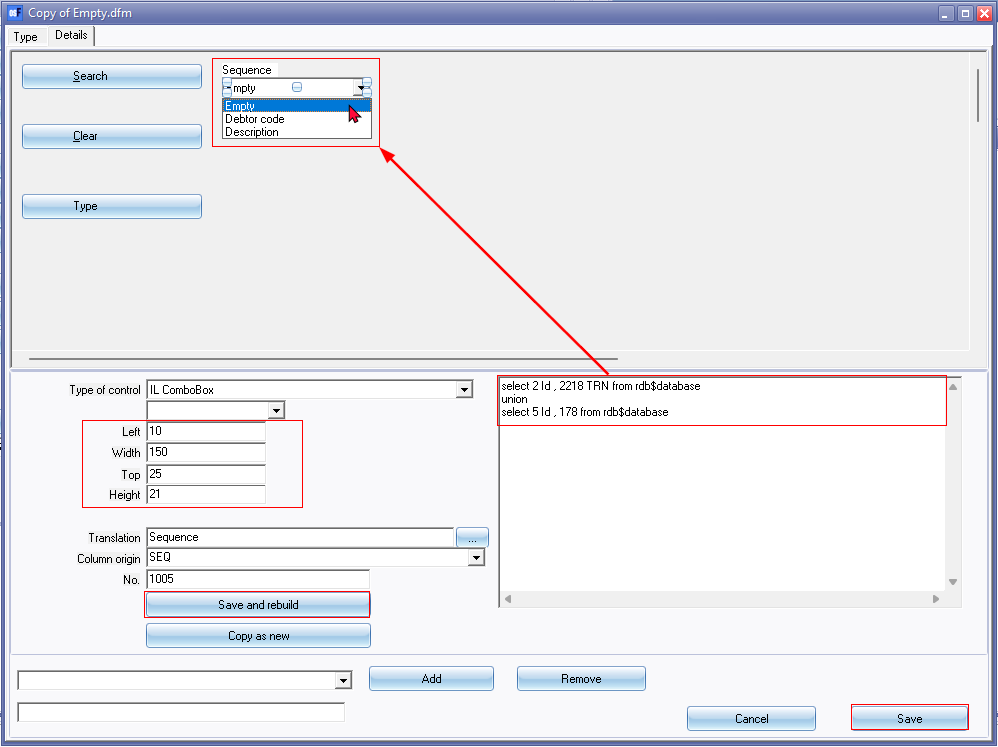
- Click on the Save button to save your parameter and to close exit the parameters screen.
|
|
If you do not click on the Save button, your parameter or any changes to the parameter will be discarded (lost). |

Preview the parameter
Once the report parameter is added, you may check the layout of the parameter.
To check the Sequence parameter:
- On the "Report man" screen, select your report.
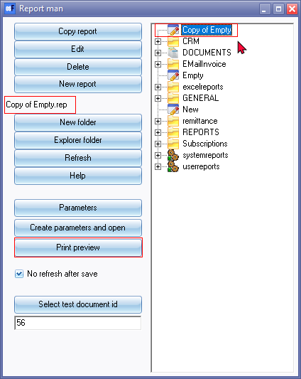
- Click on the Print preview button. The "Sequence" will be listed on the report parameters.
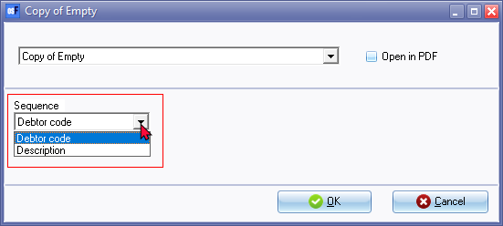
- The "Sequence" parameter will not work at this stage. You need to add and reference the parameter in the report.
Add the Sequence (Order) Parameter to the report
You need to add the following three (3) Sequence parameters
|
Parameter |
Data type |
Sets this parameter to |
Data |
Description |
|
SEQ |
String |
|
Order id |
Order id |
|
SEQTX |
String |
|
Order code |
Debtor code / Description |
|
SEQTX2 |
String Substitute |
@ORDER |
Order id |
Order id |
Add SEQ String parameter
To add the Sequence string parameter to the report:
- On the "Report man" screen, select your report and click on the Edit button. (You may also double-click on your report).
- On the "Database and connections datasets" screen (accessed from the first icon or from the Report → Data access configuration menu), click the Parameters button.
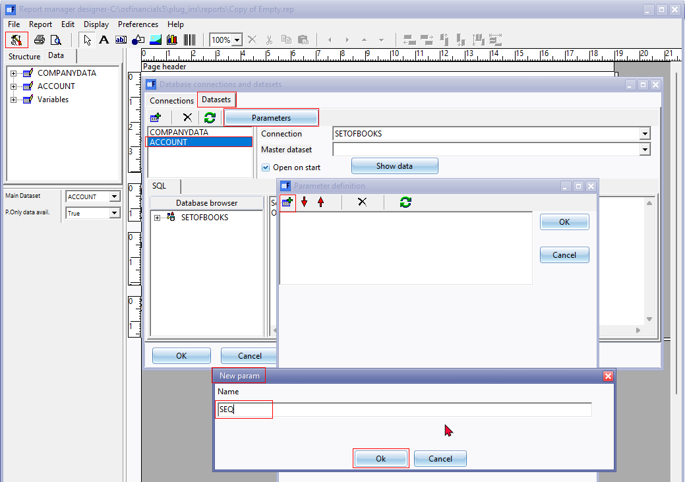
- On the "Parameter definition" screen, select the "ACCOUNT" dataset and click on the Add icon.
- On the "New param" screen, enter "SEQ".
|
|
The name if this parameter must be entered exactly as entered in the "Column origin" field for the "Sequence" parameter (i.e. "SEQ") on the parameter design screen. |
- Click Ok. This will add the parameter.
- Select the "SEQ" parameter.
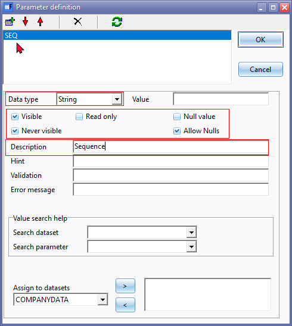
- On the "SEQ" parameter select and configure the options as follows:
- Data type - Select "String".
- Properties - "Visible" and "Never visible" as well as "Allow Nulls" fields may be ticked. The other options may be left blank.
- Description - Enter a description ("Sequence" as per this example).
- You may proceed to add the "SEQ2TX"parameter.
|
|
Should you wish to add the next parameter at a later stage, you need to click OK on both the "Parameter definition" as well as the "Database connections and datasets" screens. If you do not click on the OK button of the "Database connections and datasets" screen, your parameter or any changes to the parameter will be discarded (lost). |
Add SEQTX String parameter
To add the Sequence string parameter to the report:
- On the "Report man" screen, select your report and click on the Edit button. (You may also double-click on your report).
- On the "Database and connections datasets" screen (accessed from the first icon or from the Report → Data access configuration menu), click the Parameters button.
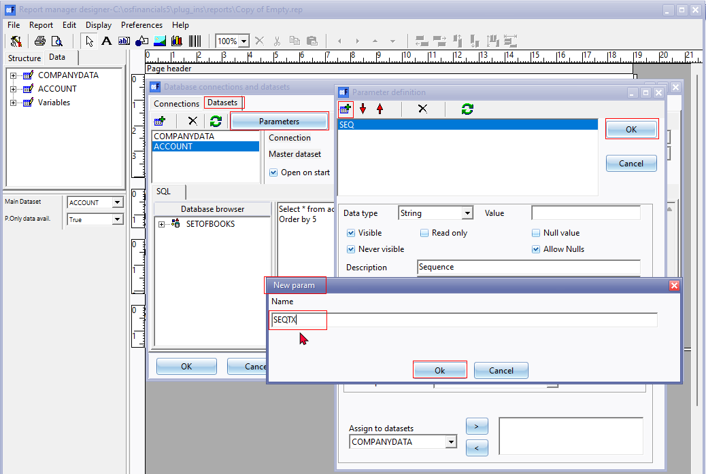
- On the "Parameter definition" screen, select the "ACCOUNT" dataset and click on the Add icon.
- On the "New param" screen, enter "SEQTX".
|
|
The name if this parameter must be entered exactly as entered in the "Column origin" field for the "Sequence" parameter, followed by TX (i.e. "SEQTX") on the parameter design screen. |
- Click Ok. This will add the parameter.
- Select the "SEQTX" parameter.
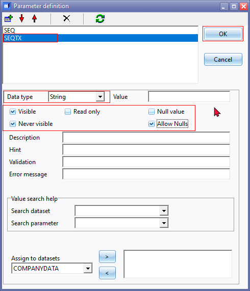
- On the "SEQTX" parameter, select and configure the options as follows:
- Data type - Select "String".
- Properties - "Visible" and "Never visible" as well as "Allow Nulls" fields may be ticked. The other options may be left blank.
- Description - Enter a description ("To account" as per this example).
- You may proceed to add the next of "Sequence" parameters.
|
|
Should you wish to add the next parameter at a later stage, you need to click OK on both the "Parameter definition" as well as the "Database connections and datasets" screens. If you do not click on the OK button of the "Database connections and datasets" screen, your parameter or any changes to the parameter will be discarded (lost). |
Add SEQTX2 String Substitute parameter
To add the Sequence string substitute parameter to the report:
- On the "Report man" screen, select your report and click on the Edit button. (You may also double-click on your report).
- On the "Database and connections datasets" screen (accessed from the first icon or from the Report → Data access configuration menu), click the Parameters button.
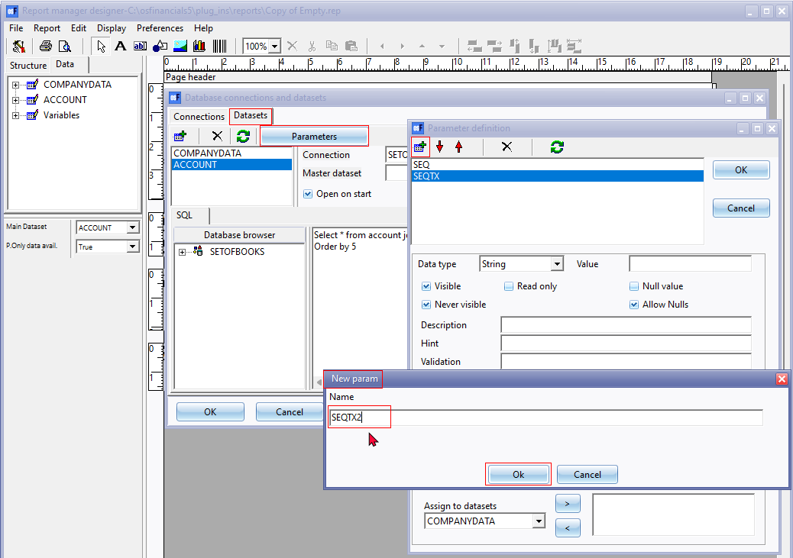
- On the "Parameter definition" screen, select the "ACCOUNT" dataset and click on the Add icon.
- On the "New param" screen, enter "SEQTX2".
|
|
The name if this parameter must be entered exactly as entered in the "Column origin" field for the "Sequence" parameter, followed by TX (i.e. "SEQTX") on the parameter design screen. |
- Click Ok. This will add the parameter.
- Select the "SEQTX2" parameter.
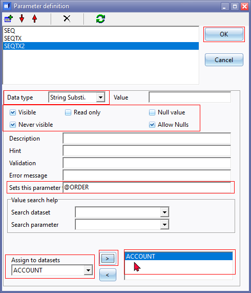
- On the "SEQTX2" parameter, select and configure the options as follows:
- Data type - Select "String Substi" (String substitute).
- Properties - "Visible" and "Never visible" as well as "Allow Nulls" fields may be ticked. The other options may be left blank.
|
|
The Null value field must not be selected (ticked). If selected (ticked), the following error will be produced: “ACCOUNT:Could not convert variant of type (Null) into type (OleStr)” |
- Description - Enter a description ("Sequence" as per this example).
- Sets this parameter to - Enter “@ORDER”.
- Assign to datasets – Select the "ACCOUNT" dataset and click on the > icon.
- Click OK on the "Parameter definition" screen.
|
|
Should you wish to add the next parameter at a later stage, you need to click OK on both the "Parameter definition" as well as the "Database connections and datasets" screens. If you do not click on the OK button of the "Database connections and datasets" screen, your parameter or any changes to the parameter will be discarded (lost). |
Add @ORDER Sequence parameter to the Dataset Sql
Refer to the section - Set the sequence (order) of the data in the report – in this document.
On the "Database and connections datasets" screen, select the ACCOUNT Dataset and change the
“Order by 5”
to
“Order by @ORDER”
If you click on the Show data button to view the data or on the Print preview icon, at this stage the following error message may be produced:
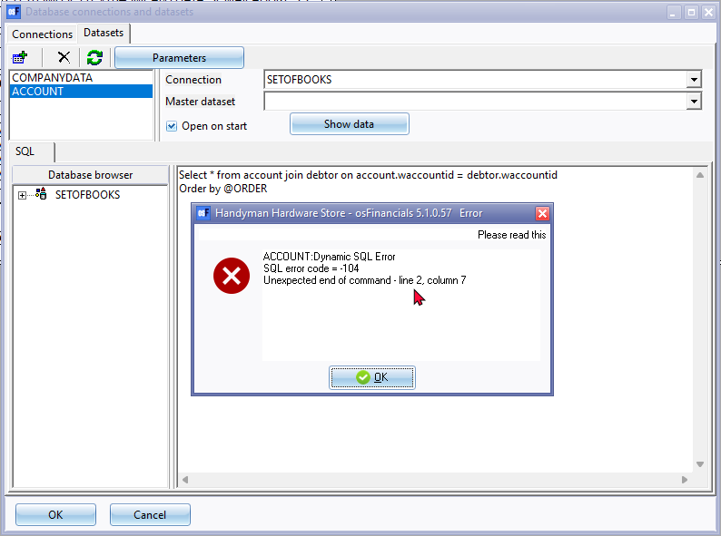
|
|
If the SEQTX2 parameter is not assigned (linked) to the "ACCOUNT" dataset, a similar error message will be displayed: ACCOUNT:Dynamic SQL Error Click OK and check the SEQTX2 parameter and assign (link) to the "ACCOUNT" dataset The reason for this, is that the Sequence parameter need to be selected on the Report parameter screen. Click OK and Save the report on exit. |
Test the Sequence parameter on the report
Once this is completed, you may need to test if the Sequence parameter works on the report.
On the "Report man" screen, select the report and click on the Print preview button.
Report listed by code
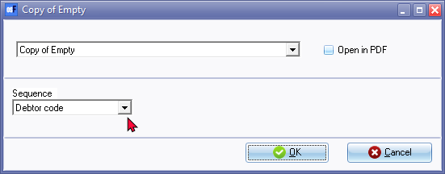
On this parameter screen, you may select the sequence (i.e. Debtor code or Description) and click OK. If this parameter works, your data (Debtors) should be listed in different sequences (order).
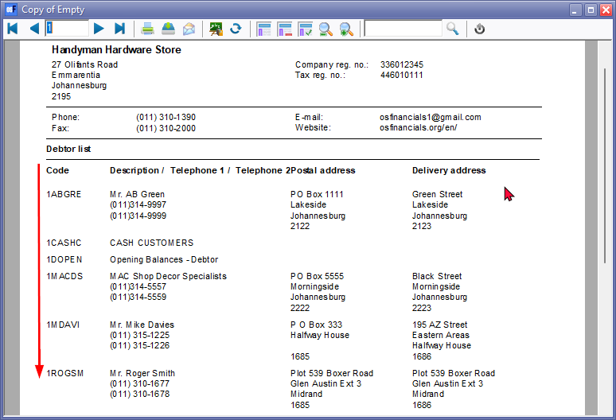
Report listed by description
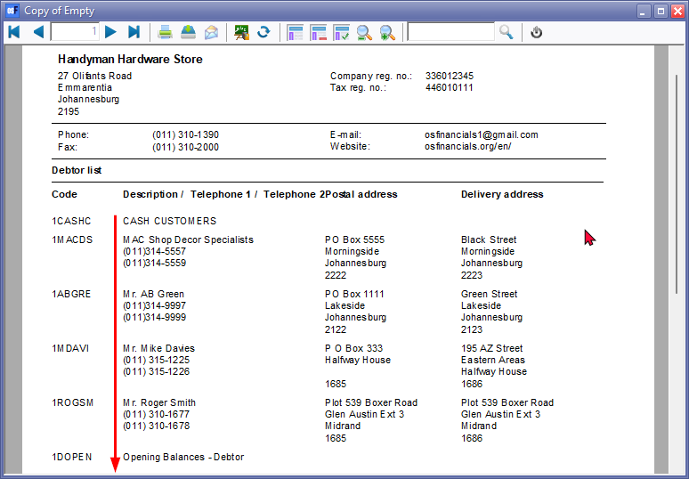
Add the Sequence parameter to the report printout
The sequence changes as per your selection on the report parameter. It is a good idea to add the parameter selection on the report printout.
A user will exactly read on the report page headers in which sequence (order) the data is displayed (listed).
|
|
Refer to the section - Reportman - Translatable label expressions in this document. |

To add the Sequence (Sort) parameter to the report:
- On the "Report man" screen, select your report.
- Select the Expression icon to insert a basic expression. The default is “2+2”.
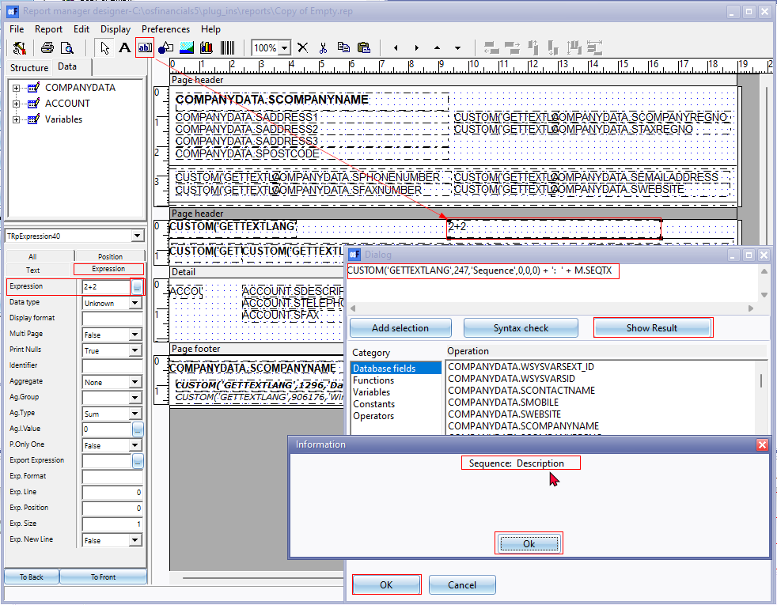
- Replace the Expression “2+2” with a label Description - Sequence: (translatable language id and description).
CUSTOM('GETTEXTLANG',247,'Sequence',0,0,0) + ': '
Then add the Variable
+ M.SEQTX
|
|
You may type a + and then select the M.SEQTX from the Variables section by clicking on the Add selection button. |
|
|
NOTE - The M.SEQ, M.SEQTX and M.SEQTX2 variables is automatically added to the Variables category or Dataset when adding parameters. |
The Expression's Sql should then be as follows:
CUSTOM('GETTEXTLANG',247,'Sequence',0,0,0) + ': ' + M.SEQTX
|
|
Refer to the section - Reportman - Translatable label expressions in this document. |
- Click on the Show Result button. The information should read “Sequence: Description”.
|
|
If the report was printed before using the Debtor code, the information should read “Sequence: Debtor code”. |
- Click Ok on the "Information" and OK on the "Dialog" screens.
- You may set font properties (e.g. Bold, size, etc.).
- Click on the Print preview button to preview the report.
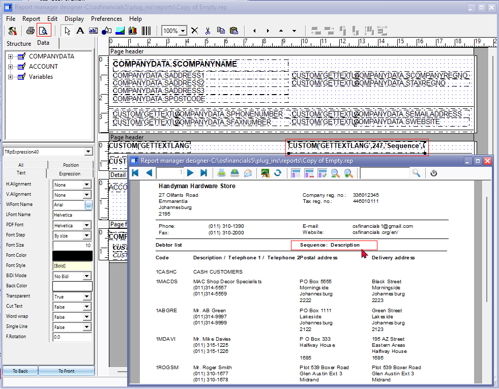
- Exit the report and Save the report.
|
|
If you do not click on the Save button, any changes to the report will be discarded (lost). |